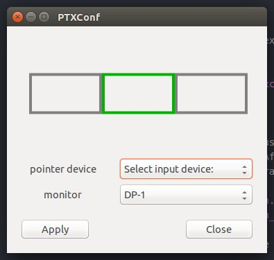

PTXConf documentation
Pen tablet and Touch screen Xinput Configuration tool (PTXConf). Configures touch/pen devices to work with extended desktops and multiple screens on Linux.
Usage
To test this you can simply run the python executable directly from the source directory:
$ git clone http://github.com/wenhsinjen/ptxconf.git
$ cd ptxconf
$ ./ptxconf.py
If you find the functionality of this tool useful you can then decide if you want to install, see installation section. After starting the application a tablet pen icon should sit in your system tray:


From the system tray you can then access the configuration dialog:

The dialog should show the configuration of your extended desktop as a set of monitors offset from each other. Here you can select the input pointer device and associate it directly with a particular monitor. The new mapping does not until after pressing the Apply button.
Installation
PTXConf depends on the python gtk2 and the AppIndicator binding. In the current POC state of this software we also depend on the xinput and xrandr command line tools. On debian based systems you can install these packages as follows,
$ sudo apt-get install xinput x11-xserver-utils
$ sudo apt-get install python-gtk2, python-appindicator
Then install this package,
$ git clone http://github.com/wenhsinjen/ptxconf.git
$ cd ptxconf
$ sudo python setup.py install
After this package has been submitted to PyPI you will be able to do,
$ sudo pip install ptxconf
API code example
from ptxconftools import ConfController
cc = ConfController()
# list pen/touch like pointing devices
for pt in cc.penTouchIds:
print pt, cc.penTouchIds[pt]['id']
# list monitor layout
for mon in cc.monitorIds:
print mon, cc.monitorIds[mon]
# map pointer device 'myPen' to monitor 'hdmi-1'
cc.setPT2Monitor('myPen','hdmi-1')